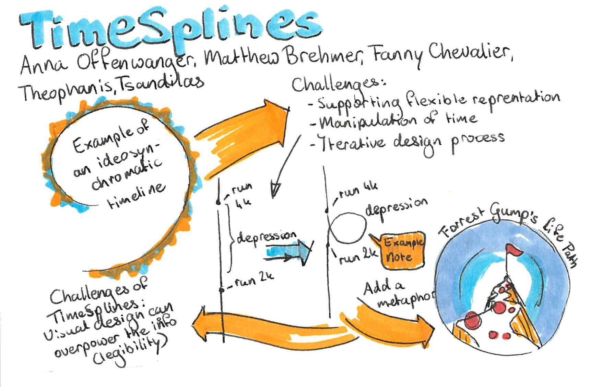
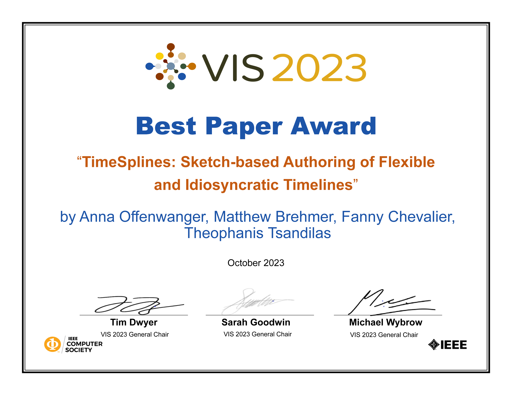

Timelines are essential for visually communicating chronological narratives and reflecting on the personal and
cultural significance of historical events. Existing visualization tools tend to support conventional linear
representations, but fail to capture personal idiosyncratic conceptualizations of time. In response, we built
TimeSplines, a visualization authoring tool that allows people to sketch multiple free-form temporal axes
and
populate them with heterogeneous time-oriented data via incremental and lazy data binding. Authors can bend,
compress, and stretch temporal axes to emphasize or de-emphasize intervals based on their personal importance;
they can also annotate the axes with text and figurative elements to convey contextual information. The results
of two user studies show how people appropriate the concepts in TimeSplines to express their own
conceptualization of time. Our curated gallery of images demonstrates the expressive potential of our approach.
Anna Offenwanger, Matthew Brehmer, Fanny Chevalier, Theophanis Tsandilas. TimeSplines: Sketch-Based Authoring of Flexible and Idiosyncratic Timelines Submitted to Proceedings of IEEE VIS 2023.
We evaluated TimeSplines using three established methods: a reproduction study with 12 participants to evaluate the system's usability; a free-form evaluation with four designers and visualization researchers to evaluate different use cases and creative workflows; and a gallery of visualizations produced with TimeSplines to demonstrate the expressive power of our approach.
We conducted a reproduction study with 12 participants to evaluate the systems usability, i.e. if users can quickly understand how to use the tools features. From the reproduction study, we found participants were able to understand and sometimes appropriate the concepts of idiosyncratic representations within TimeSplines, such as by creating a number of variations of the line they were asked to reproduce.
Download Study 1 Protocol Study protocol that was used for conducting the study. Download Study 1 Task Deck Task deck that participants were asked to work through. The tutorials and data can be viewed belowWe conducted a reproduction study with 12 participants to evaluate the systems usability, i.e. if users can quickly understand how to use the tools features. From the reproduction study, we found participants were able to understand and sometimes appropriate the concepts of idiosyncratic representations within TimeSplines, such as by creating a number of variations of the line they were asked to reproduce.
Download Study 2 Protocol Study protocol that was used for conducting the study. Download Study 2 Tutorial Deck Tutorial deck that participants were provided to assist with learning the system. The tutorials and data can be viewed belowStudy 2 participants were walked through the following image to give an idea what sort of visualizations the tool was targeted at, without biasing their thinking by showing them additional visualizations created in the system. The image is shown at reduced resolution here.
In both studies participants were provided with the following tutorials and datasets
Running Event Data Running Statistical DataTimeSplines recieved a Best Paper award for VIS'23, and was presented in Melbourne, Australia in October 2023.
As part of the VIS'23 plenary session best paper session, the TimeSplines presentation was captured as a sketchnote by the designer and artist Nathalie Overdevest
 